seqkit usage
Introduction
seqkit是重庆医科大学病毒性肝炎研究所副研究员沈伟老师基于Go语言开发的跨平台的、快速的、全面的fasta/q处理工具
Installation
1 | # General |
Usage
Example file: AARS.lncRPI.bed
Description: AARS蛋白结合lncRNA位点信息
Source: POSTAR3 from LuLab@Tsinghua Univeristy
subseq
Get subsequences by region/gtf/bed, including flanking sequences.
Usage:
seqkit subseq [flags]Flags:
–bed string by tab-delimited BED file
–chr strings select limited sequence with sequence IDs when using --gtf or --bed (multiple
value supported, case ignored)
-d, --down-stream int down stream length
–feature strings select limited feature types (multiple value supported, case ignored, only
works with GTF)
–gtf string by GTF (version 2.2) file
–gtf-tag string output this tag as sequence comment (default “gene_id”)
-h, --help help for subseq
-f, --only-flank only return up/down stream sequence
-r, --region string by region. e.g 1:12 for first 12 bases, -12:-1 for last 12 bases, 13:-1 for
cutting first 12 bases. type “seqkit subseq -h” for more examples
-u, --up-stream int up stream length
-U, --update-faidx update the fasta index file if it exists. Use this if you are not sure whether
the fasta file changed
1 | seqkit subseq --bed AARS.lncRPI.bed GRCh38.p13.genome.fa.gz > AARS.lncRPI.fasta |
stats
Simple statistics of FASTA/Q files.
Flags:
-a, --all all statistics, including quartiles of seq length, sum_gap, N50
-b, --basename only output basename of files
-E, --fq-encoding string fastq quality encoding. available values: ‘sanger’, ‘solexa’, ‘illumina-1.3+’, ‘illumina-1.5+’, ‘illumina-1.8+’. (default “sanger”)
-G, --gap-letters string gap letters (default “- .”)
-h, --help help for stats
-e, --skip-err skip error, only show warning message
-i, --stdin-label string label for replacing default “-” for stdin (default “-”)
-T, --tabular output in machine-friendly tabular format
1 | seqkit stat -a -T AARS.lncRPI.fasta | csvlook |
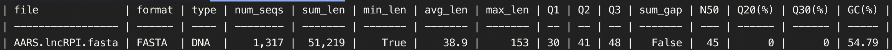
watch
Monitoring and online histograms of sequence features
Usage:
seqkit watch [flags]Flags:
-B, --bins int number of histogram bins (default -1)
-W, --delay int sleep this many seconds after online plotting (default 1)
-y, --dump print histogram data to stderr instead of plotting
-f, --fields string target fields, available values: ReadLen, MeanQual, GC, GCSkew
(default “ReadLen”)
-h, --help help for watch
-O, --img string save histogram to this PDF/image file
-H, --list-fields print out a list of available fields
-L, --log log10(x+1) transform numeric values
-x, --pass pass through mode (write input to stdout)
-p, --print-freq int print/report after this many records (-1 for print after EOF) (default -1)
-b, --qual-ascii-base int ASCII BASE, 33 for Phred+33 (default 33)
-Q, --quiet-mode supress all plotting to stderr
-R, --reset reset histogram after every report
-v, --validate-seq validate bases according to the alphabet
-V, --validate-seq-length int length of sequence to validate (0 for whole seq) (default 10000)
1 | seqkit watch -f ReadLen AARS.lncRPI.fasta |
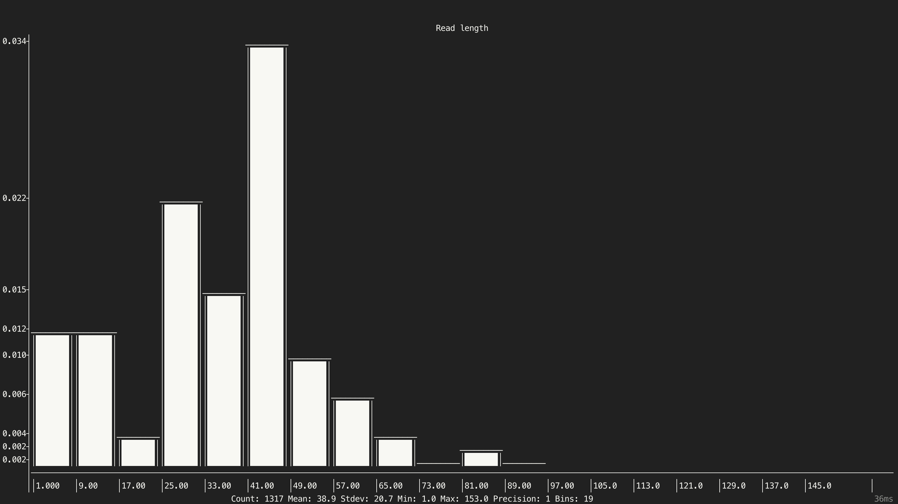
seq
Transform sequences (extract ID, filter by length, remove gaps, reverse complement…)
Usage:
seqkit seq [flags]Flags:
-k, --color colorize sequences - to be piped into “less -R”
-p, --complement complement sequence, flag ‘-v’ is recommended to switch on
–dna2rna DNA to RNA
-G, --gap-letters string gap letters to be removed with -g/–remove-gaps (default “- \t.”)
-h, --help help for seq
-l, --lower-case print sequences in lower case
-M, --max-len int only print sequences shorter than or equal to the maximum length (-1
for no limit) (default -1)
-R, --max-qual float only print sequences with average quality less than this limit (-1 for
no limit) (default -1)
-m, --min-len int only print sequences longer than or equal to the minimum length (-1
for no limit) (default -1)
-Q, --min-qual float only print sequences with average quality qreater or equal than this
limit (-1 for no limit) (default -1)
-n, --name only print names/sequence headers
-i, --only-id print IDs instead of full headers
-q, --qual only print qualities
-b, --qual-ascii-base int ASCII BASE, 33 for Phred+33 (default 33)
-g, --remove-gaps remove gaps letters set by -G/–gap-letters, e.g., spaces, tabs, and
dashes (gaps “-” in aligned sequences)
-r, --reverse reverse sequence
–rna2dna RNA to DNA
-s, --seq only print sequences
-u, --upper-case print sequences in upper case
-v, --validate-seq validate bases according to the alphabet
-V, --validate-seq-length int length of sequence to validate (0 for whole seq) (default 10000)
1 | # 查看.fasta文件 |
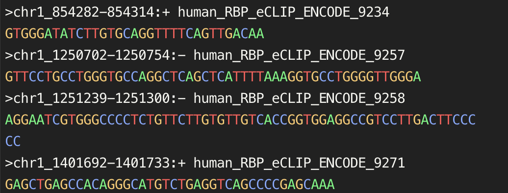
1 | # 提取ID |
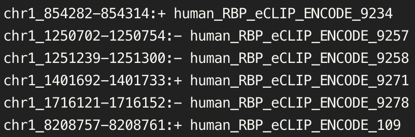
1 | # 提取序列 |
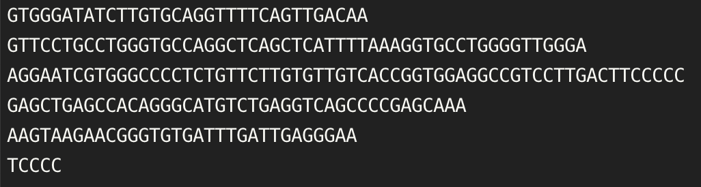
1 | # 过滤长度小于40bp的序列 |
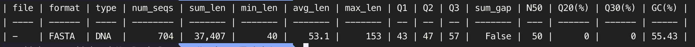
faidx
Create FASTA index file and extract subsequence
Usage:
seqkit faidx [flags][regions…] Flags:
-f, --full-head print full header line instead of just ID. >New fasta index file ending with
.seqkit.fai will be created
-h, --help help for faidx
-i, --ignore-case ignore case
-I, --immediate-output print output immediately, do not use write buffer
-l, --region-file string file containing a list of regions
-U, --update-faidx update the fasta index file if it exists. Use this if you are not sure
whether the fasta file changed
-r, --use-regexp IDs are regular expression. But subseq region is not supported here.
1 | # 筛选位于chr15的序列 |
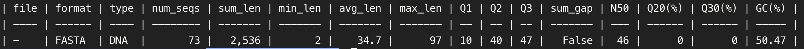
locate
Locate subsequences/motifs, mismatch allowed
Usage:
seqkit locate [flags]Flags:
–bed output in BED6 format
-c, --circular circular genome. type “seqkit locate -h” for details
-d, --degenerate pattern/motif contains degenerate base
–gtf output in GTF format
-h, --help help for locate
-M, --hide-matched do not show matched sequences
-i, --ignore-case ignore case
-I, --immediate-output print output immediately, do not use write buffer
-m, --max-mismatch int max mismatch when matching by seq. For large genomes like human
genome, using mapping/alignment tools would be faster
-G, --non-greedy non-greedy mode, faster but may miss motifs overlapping with others
-P, --only-positive-strand only search on positive strand
-p, --pattern strings pattern/motif (multiple values supported. Attention: use double
quotation marks for patterns containing comma, e.g., -p ‘“A{2,}”’)
-f, --pattern-file string pattern/motif file (FASTA format)
-F, --use-fmi use FM-index for much faster search of lots of sequence patterns
-r, --use-regexp patterns/motifs are regular expression
-V, --validate-seq-length int length of sequence to validate (0 for whole seq) (default 10000)
使用MEME得到的motif
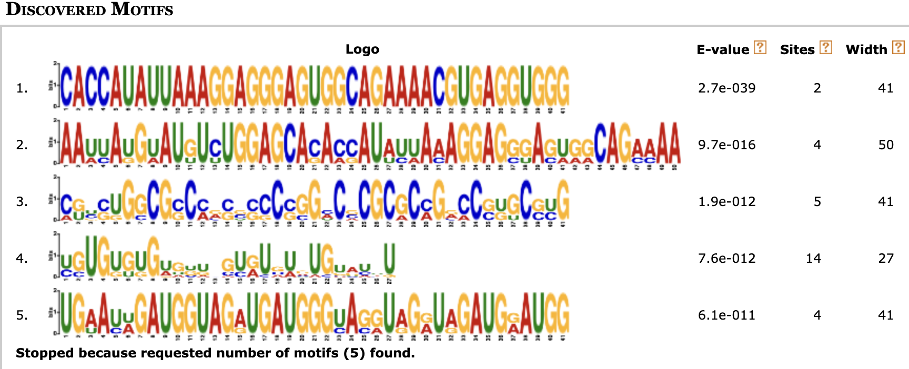
1 | # Locate motif found by MEME |
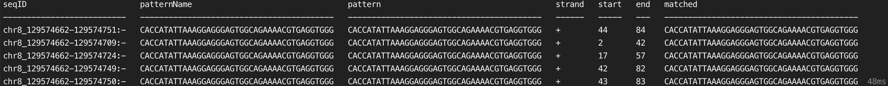
grep
Search sequences by ID/name/sequence/sequence motifs, mismatch allowed.
Usage:
seqkit grep [flags]Flags:
-n, --by-name match by full name instead of just ID
-s, --by-seq search subseq on seq, both positive and negative strand are searched, and
mismatch allowed using flag -m/–max-mismatch
-c, --circular circular genome
-C, --count just print a count of matching records. with the -v/–invert-match flag,
count non-matching records
-d, --degenerate pattern/motif contains degenerate base
–delete-matched delete a pattern right after being matched, this keeps the firstly
matched data and speedups when using regular expressions
-h, --help help for grep
-i, --ignore-case ignore case
-I, --immediate-output print output immediately, do not use write buffer
-v, --invert-match invert the sense of matching, to select non-matching records
-m, --max-mismatch int max mismatch when matching by seq. For large genomes like human genome,
using mapping/alignment tools would be faster
-P, --only-positive-strand only search on positive strand
-p, --pattern strings search pattern (multiple values supported. Attention: use double
quotation marks for patterns containing comma, e.g., -p ‘“A{2,}”’)
-f, --pattern-file string pattern file (one record per line)
-R, --region string specify sequence region for searching. e.g 1:12 for first 12 bases,
-12:-1 for last 12 bases
-r, --use-regexp patterns are regular expression
1 | seqkit grep -f extract.id AARS.lncRPI.fasta -o extract.fasta |
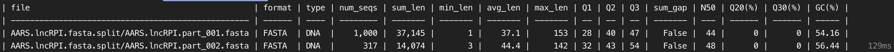
shuffle
Shuffle sequences
Usage:
seqkit shuffle [flags]Flags:
-h, --help help for shuffle
-k, --keep-temp keep temporary FASTA and .fai file when using 2-pass mode
-s, --rand-seed int rand seed for shuffle (default 23)
-2, --two-pass two-pass mode read files twice to lower memory usage. (only for FASTA format)
-U, --update-faidx update the fasta index file if it exists. Use this if you are not sure whether
the fasta file changed
1 | seqkit shuffle AARS.lncRPI.fasta > shuffle.fasta |
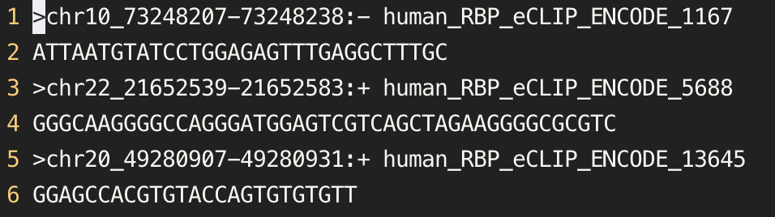